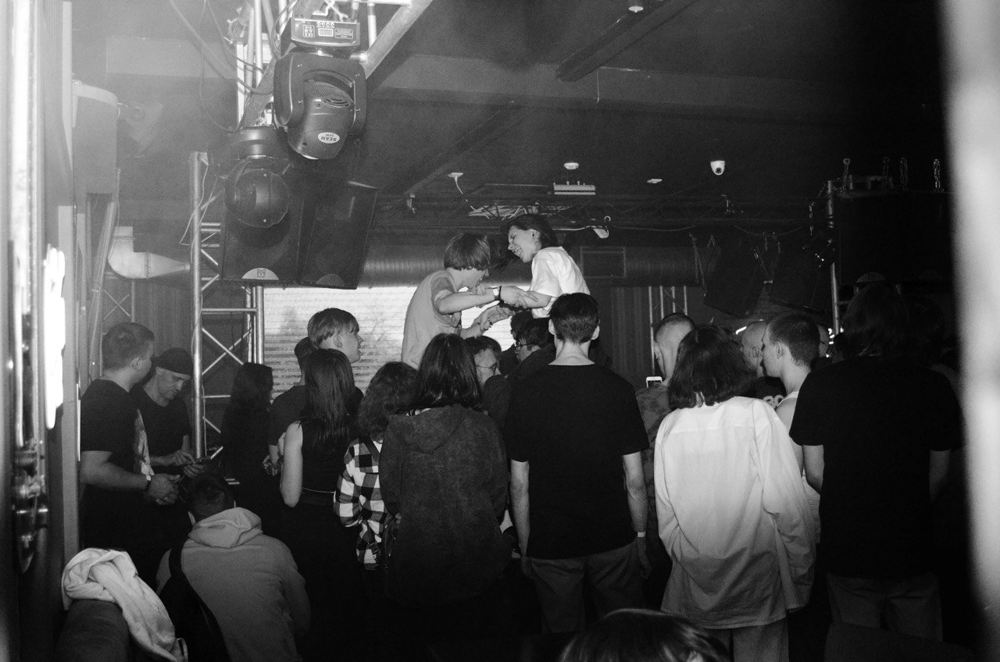
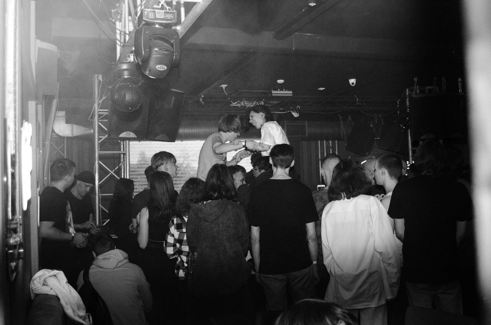
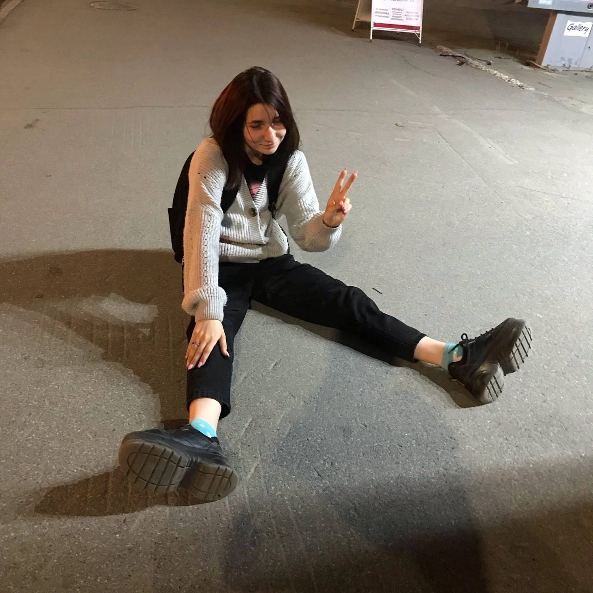
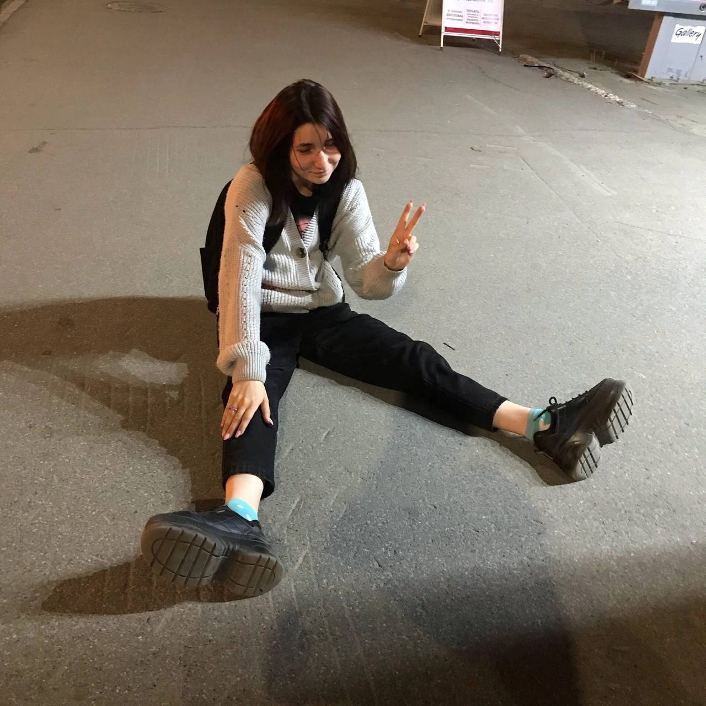

 



Василюта, всегда помни, что ты самая лучшая girl на этой earth!!!
Не грусти и не расстраивайся, будь в потоке и моменте
Я тебя очень сильно люблю и скучаю!!! - Рита Отт
Верю, у тебя получился зашить кеды!
*молча обнимает*
- Артур
— Здесь все разрушено!
— Да… жаль, что не мы это сделали…
— Теряем хватку, брат.
Опоссум Крэш и Эдди
Захватить тебе торнадо? Пошли на драму? Пойдем за Мишей зайдём?
Помни, что я люблю тебя и всегда жду твоего сообщения
-Даша
Дорогой брат-близнец!
Без сомнений ты очень талантлива, и любое дело, за которое ты основательно возьмёшься-получится!
Я уверена, что в новом городе ты преуспеешь и будешь только круче и круче с каждым годом.
Но ты всегда сможешь вернуться, ведь мы твоя семья
Грустно, что последние года мы не так много общались, но в любом случае, я рада, что единственный человек,
которого я могу назвать другом это ты-Василиса! Мой самый верный и родной товарищ. Я тебя люблю!
- Ульяна
не сочти за грубость, пошлость или намек
не сочти за признание в любви не в срок
не сочти за ложные обещания или страдания
я надеюсь не подведет авиакомпания
послушай когда будет грустно или весело
послушай когда все в жизни обеспечено
послушай когда заскучаешь или узнаешь
один раз точно послушаешь, ведь заскучаешь
не бойся вернуться в начало, от куда все началось
не бойся совершать ошибки, давая отпор
и даже если где-то как-то когда-то не сошлось
мы встретим тебя с цветами и вином в упор
много новых там людей найдешь наверное
много нового узнаешь для себя красивой
и что было до этого горе - фанерное
я всегда буду рядом не тварью льстивой
прости меня, что иногда в моменты драмы
был не рядом, не смог поддержать или утешить
но я уверен в новом городе шикарные панорамы
и твой бойфренд сможет в минуту горя понежить
прости меня за все, что делалось не так
это не во зло, поверь
ты знаешь, что я тряпка и слабак
но у меня только одна дверь
приезжай на новый год, потопчим снег ногами
приезжай на лето, проводим солнце в закат
встретим рассвет и он пойдет с нами
знай, из всех тварей - я твой главный фанат
я любил тебя и любить не устану
может мир пошлет мне рекламу
в которой счастливая ты
у теплого окна обнимая цветы
и смотря в даль, думая о лете
что проводила его в компании
иногда улетая на комете
в одном и том же здании
обращение затянулось, я надоедать не буду
лишь скажу, что есть на свете люди
что любят и ждут тебя всегда
хоть и разные у всех города